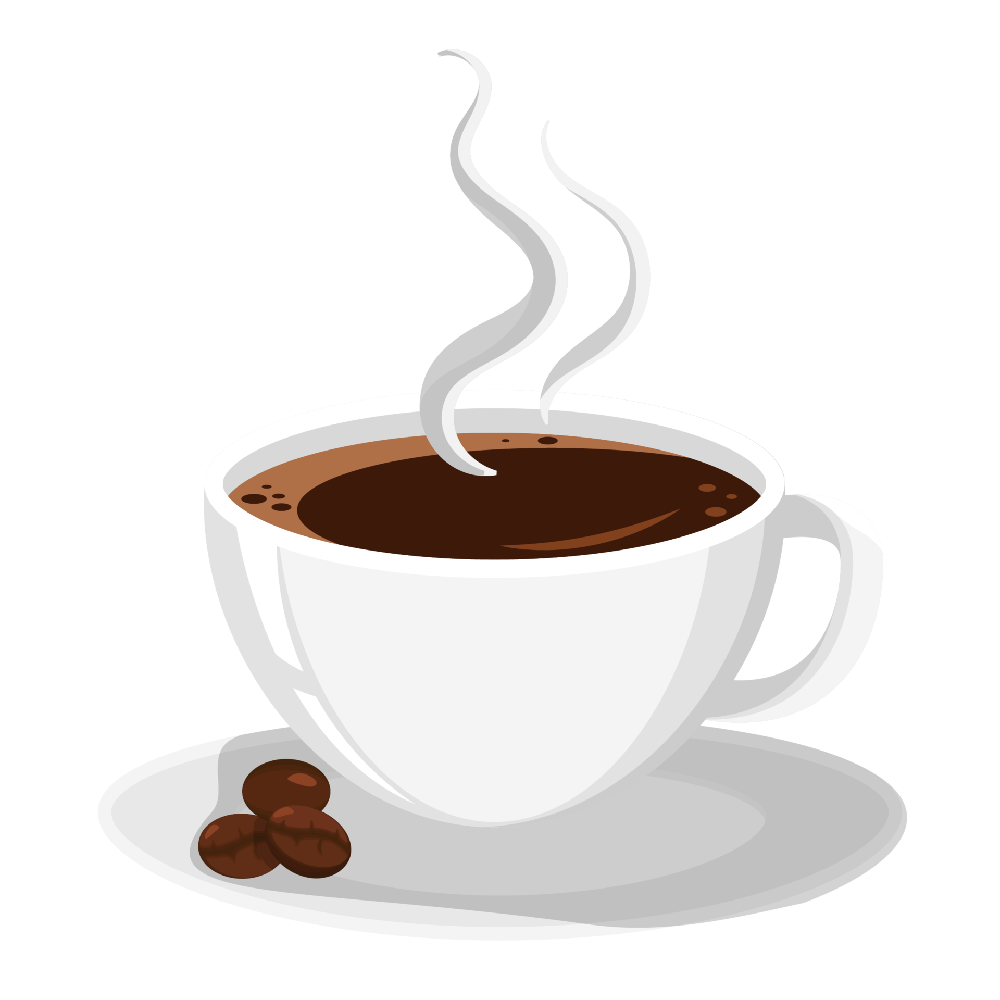

Blog


9 INTERESTING FACTS ABOUT COFFEE YOU DIDN'T KNOW
1. Coffee has been around since 800 A.D.
According to legend, 9th-century goat herders discovered how caffeine affected their goats,
who looked like they were "dancing" (probably high on caffeine) after eating the Coffea plant's fruit.
After that discovery, the cup of coffee as we know it was born when a local monk made a drink with
the product and discovered that it kept him awake all night.
2. Technically, coffee beans are seeds
They're the pits of the cherry-like berries found on flowering shrubs,
but because of their resemblance to legumes, we name them "beans.
" So, technically coffee beans are seeds.
4. The most expensive coffee in the world can cost more than $600 per pound
The faeces (yes, you read that correctly) of an Asian palm civet is used to make one
of the most sought-after types of coffee, called Kopi luwak
- also known as “cat poop coffee”. The coffee is made from
coffee cherries that have been eaten, digested, and then pooped out by the mammal.
The beans are then cleaned and processed. With prices ranging between $35 and $100 a cup,
or about $100 to $600 a pound, this coffee is known as the world's most expensive coffee.
5. Several people have attempted to outlaw coffee
Leaders in Mecca forbade the drink in 1511 because they believed it sparked “radical thinking”.
Coffee was also attempted to be banned by certain 16th-century Italian clergymen who called the drink "satanic.
" Pope Clement VII, on the other hand, was so fond of coffee that he abolished the ban and had it baptized in the year 1600.
For its alleged links to rebellious sentiment, the Swedish government made both coffee and coffee paraphernalia
(including cups and dishes) illegal as recently as the 18th century
6. Finland drinks the most coffee in the world
Which country drinks the most coffee? According to the International Coffee Organization,
the average adult Finn consumes 27.5 pounds of coffee per year. In comparison,
the average weight of an American is only 11 pounds.
In second place, you find Norway, third place Iceland and fourth place Denmark
7. Coffee drinkers live longer than non-coffee users
According to Harvard Health Publishing, research has linked moderate intake
(about 3-4 cups per day) to a longer life span, as well as a lower risk of
cardiovascular disease, type 2 diabetes, and Parkinson's disease.
8. Caffeine-free does not mean decaf
According to the Mayo Clinic, an eight-ounce brewed cup of decaf coffee contains two to 12 milligrams
of caffeine. A standard cup of coffee has between 95 and 200 milligrams of caffeine,
while a can of cola contains between 23 and 35 mg.
9. Norwegians drinks on an average 5 cups a day
Norwegians who drink coffee consume an average of five cups a day.
We are therefore doing our part to maintain the global total of approx. 1.6 billion cups every single day.
This subsequent consumption makes caffeine by far the world's most widely used stimulant.